Week 9: Shared Autonomy and Human-in-the-Loop Learning
• Why teleoperation is hard, and what shared autonomy means
• Shared autonomy via hindsight optimization (Javdani et al., RSS 2015)
• Shared autonomy via deep reinforcement learning (Reddy et al., RSS 2018)
• Controlling assistive robots with learned latent actions (Losey et al., ICRA 2020)
• RelaxedIK: real-time, feasible robot arm motion (Rakita et al., RSS 2018)
• Fleet-DAgger: many robots learning from a few remote humans (Hoque et al., CoRL 2022)
• Synthesis: what does each method assume about the human?
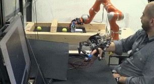
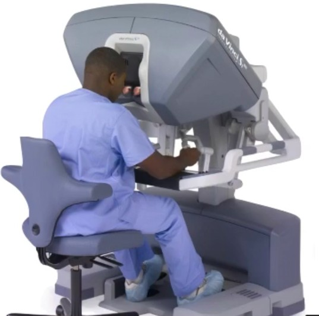
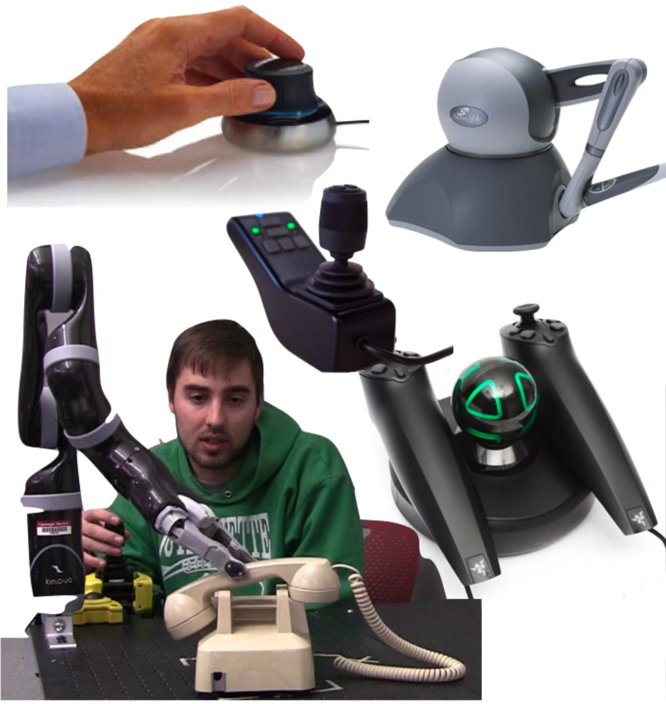
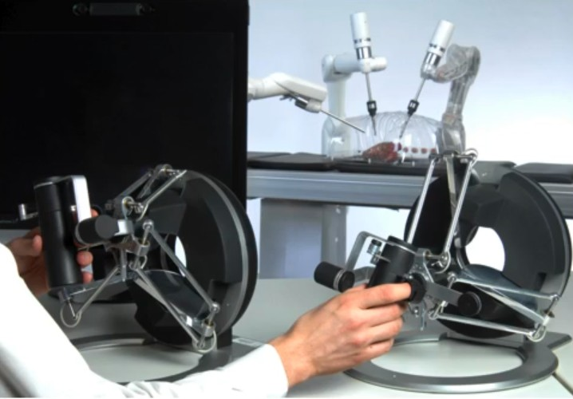
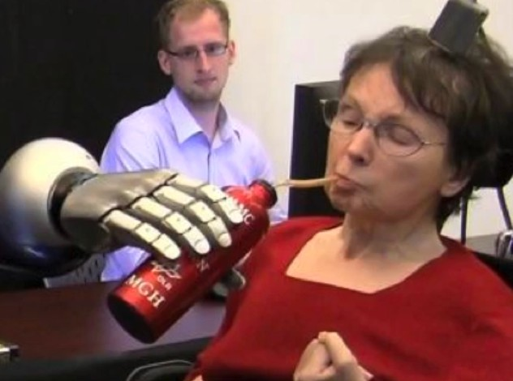
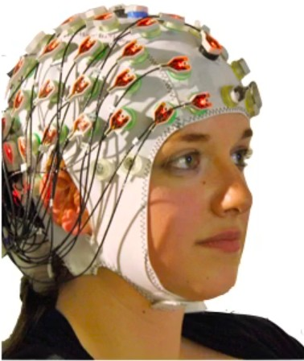
Noisy, insufficient degrees of freedom, tedious
Image credit: Javdani RSS2015 talk
• Hard: actuating a robot with many DoF and/or unfamiliar dynamics through a low-DoF interface (joystick, mouse, brain-computer interface).
• Hard: specifying a goal formally (e.g., coordinates, grasp poses).
• Easy: demonstrating the goal indirectly, through imperfect inputs.
• …let the machine figure out what I want, and help me get there!
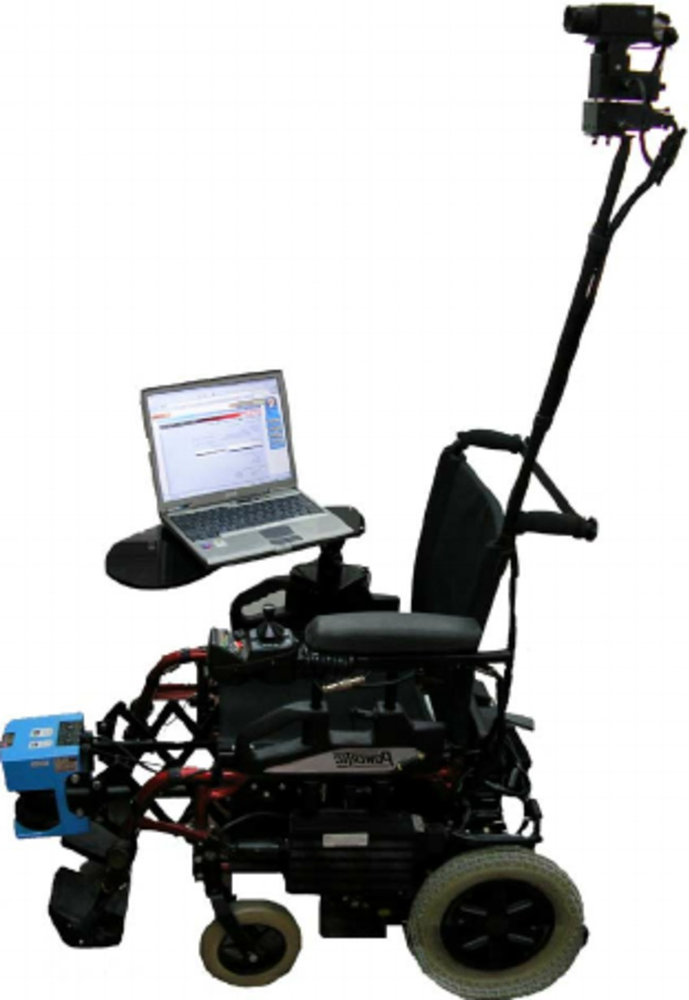
Image source: “Multihierarchical Interactive Task Planning. Application to Mobile Robotics” Galindo et al., 2008
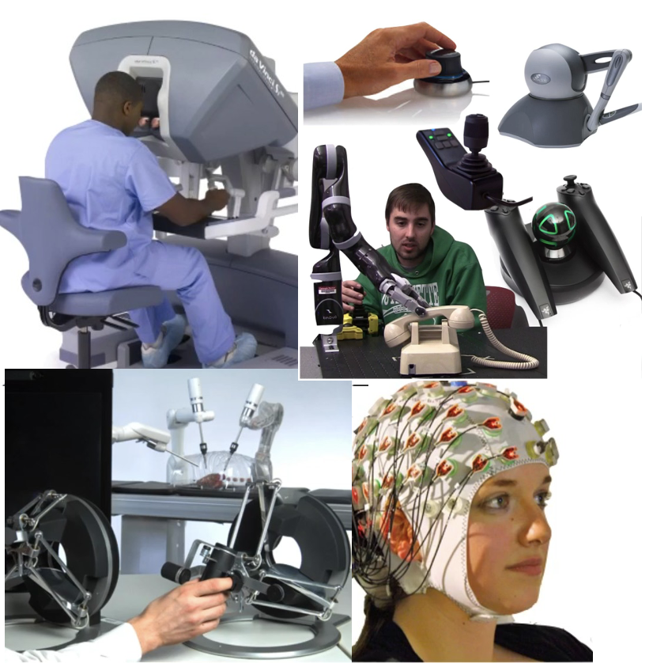
User Input+
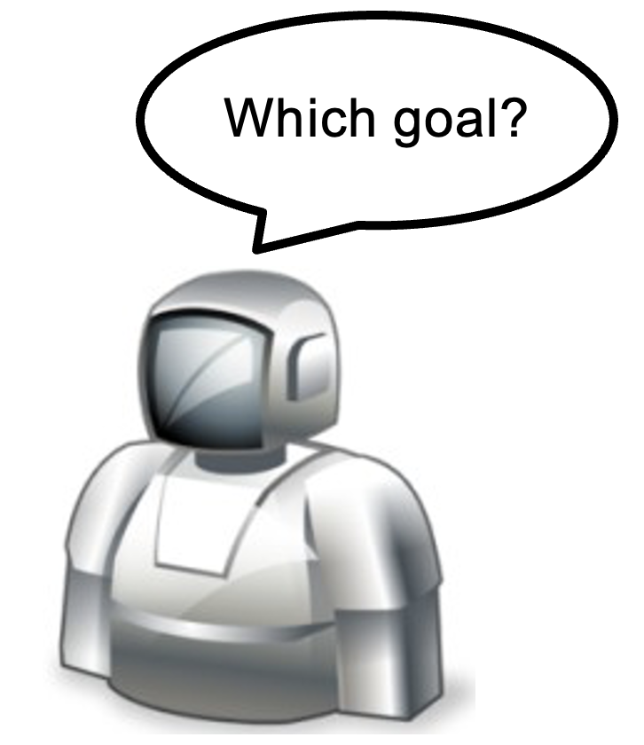
Autonomous Assistance=
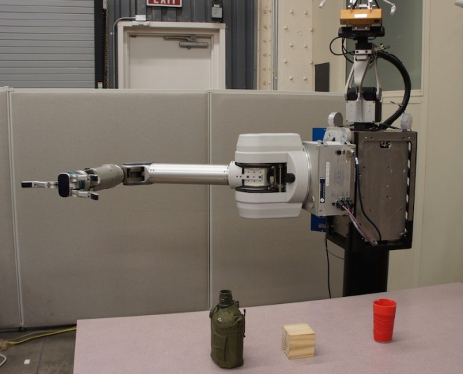
Achieve GoalThe catch: the robot usually does not know the user’s goal a priori. It has to infer it from the user’s inputs while it is helping.
Predict-then-blend
[Dragan and Srinivasa 13], [Kofman et al. 05], [Kragic et al. 05], [Yu et al. 05], [McMullen et al. 14], …
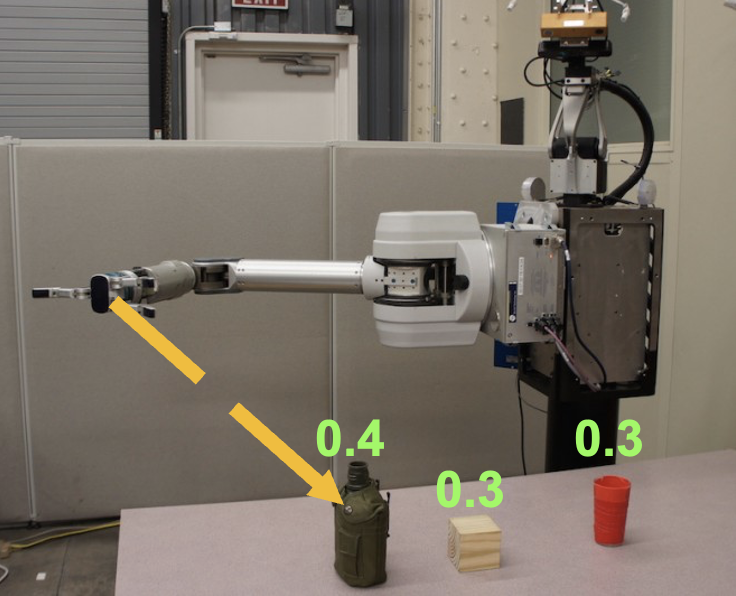
Assist for the whole goal distribution
[Hauser 13], [Javdani et al. 15]
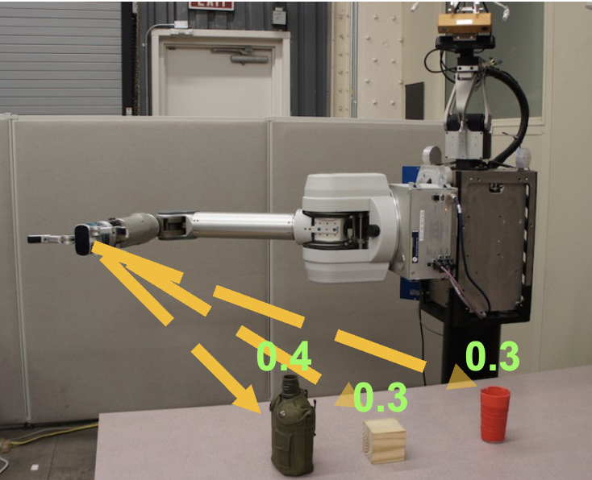
The second option can help even when no single goal is confidently predicted, e.g., in clutter.
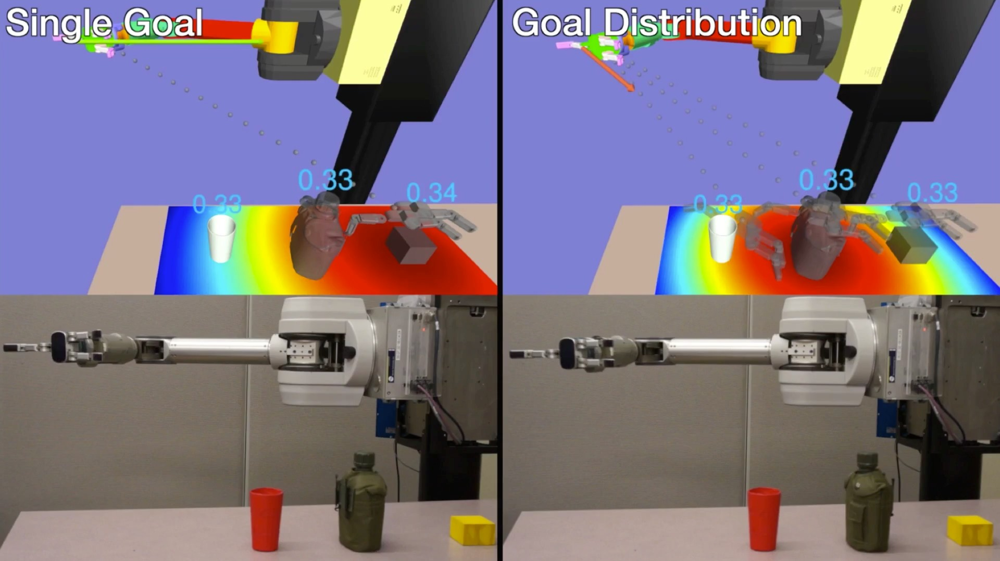
Image credit: Javdani RSS2015 talk
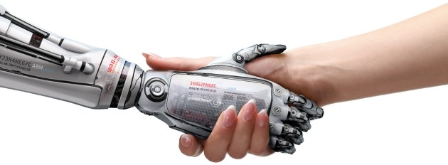
How can a robot collaborating with a human infer the human’s goals, and help achieve them, with as few assumptions as possible?
We will move from methods that assume a lot (known dynamics, goals, user model) to methods that assume very little.
Mandlekar et al., “Human-in-the-Loop Imitation Learning using Remote Teleoperation”. Easier teleoperation means cheaper demonstration and intervention data.
Shervin Javdani, Siddhartha S. Srinivasa, J. Andrew Bagnell
Robotics: Science and Systems (RSS), 2015
Robot state \(x \in X\) (continuous), robot action \(a \in A\) (continuous)
Deterministic dynamics: \(x' = T(x, a)\)
User input \(u \in U\) (e.g., joystick), mapped to robot actions by direct teleoperation \(D: U \to A\)
A discrete set of goals \(g \in G\). The user knows their goal; the robot does not.
Each goal may have several targets \(\kappa\) (e.g., grasp poses for one object)
Clip from Javdani’s RSS 2015 talk (1:38–2:16)
User as a goal-specific MDP \((X, U, T, C_g^{\text{usr}})\): they approximately optimize a cost \(C_g^{\text{usr}} : X \times U \to \mathbb{R}\)
MaxEnt IOC: \(p(\xi \mid g) \propto \exp(-C_g^{\text{usr}}(\xi))\), where \(\xi\) is a sequence of states and inputs
Soft value iteration computes the normalizer, with \(\text{softmin}_u f(u) = -\log \int_u \exp(-f(u))\, du\) and \(x' = T(x, D(u))\):
\[ \begin{aligned} Q^{\approx}_{g}(x, u) &= C_g^{\text{usr}}(x, u) + V^{\approx}_{g}(x') \\ V^{\approx}_{g}(x) &= \underset{u}{\text{softmin}}\, Q^{\approx}_{g}(x, u) \\ \pi_g^{\text{usr}}(u \mid x) &= \exp\big(V^{\approx}_g(x) - Q^{\approx}_g(x, u)\big) \quad \text{(user policy)} \end{aligned} \]
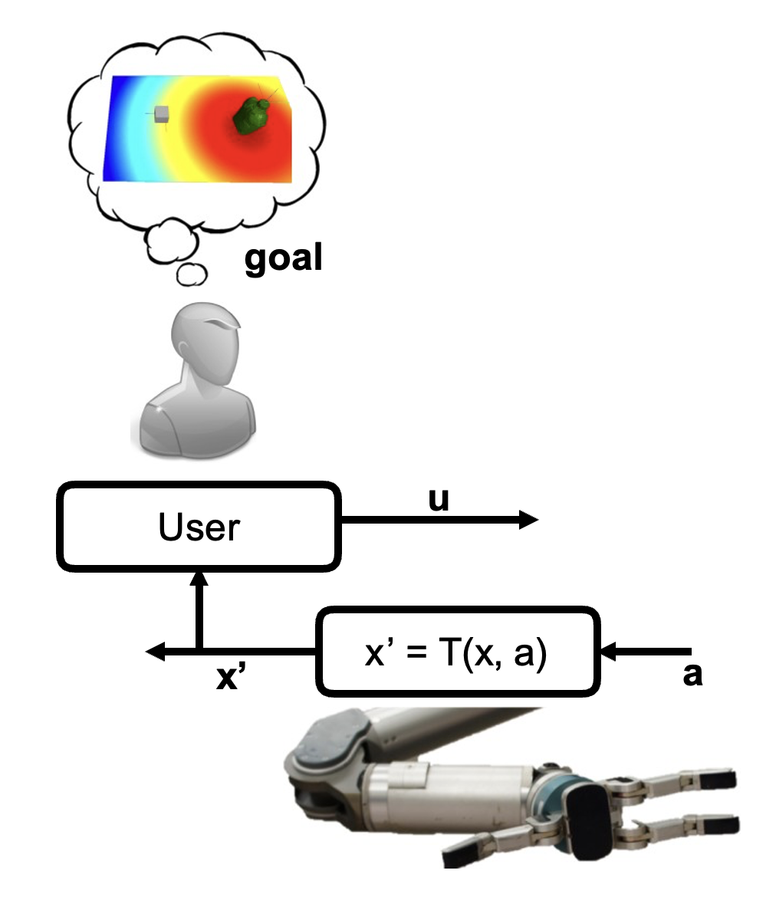
\[ p(\xi^{0 \to t} \mid g) = \prod_{\tau \le t} \pi^{\text{usr}}_g(u_\tau \mid x_\tau) \]
\[ p(g \mid \xi^{0 \to t}) = \frac{p(\xi^{0 \to t} \mid g)\, p(g)}{\sum_{g'} p(\xi^{0 \to t} \mid g')\, p(g')} \]
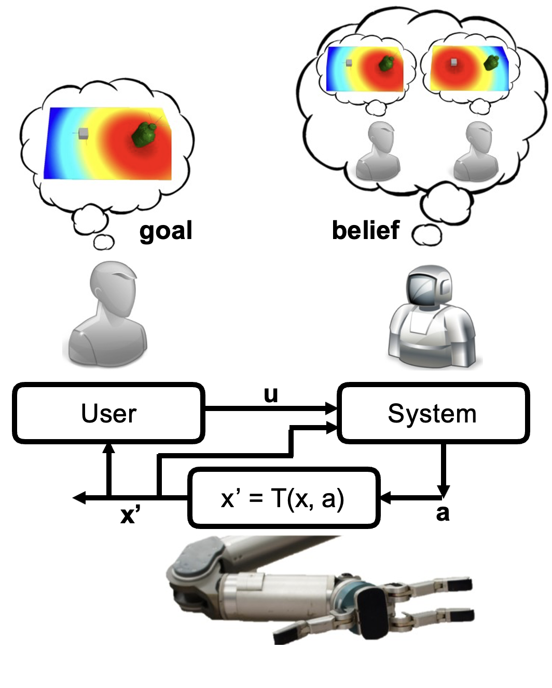
System state \(s = (x, g) \in X \times G\): the robot state is known, all uncertainty is over the goal
Belief \(b(g) = p(g \mid \xi^{0 \to t})\); observations are user inputs \(u\); the observation model \(\Omega\) is the user model + Bayes’ rule
POMDP \((S, A, T, C^{\text{rob}}, U, \Omega)\) with robot cost \(C^{\text{rob}} : S \times A \times U \to \mathbb{R}\)
The cost depends on the user input \(u\), which is non-standard. This lets it penalize robot actions that deviate from what the user commanded, because users want to keep control authority. In the experiments:
\[ C_\kappa^{\text{rob}}(x, a, u) = C_\kappa^{\text{usr}}(x, u) + \big(a - D(u)\big)^2 \]
MDP solution:
\[V^{\pi^r}(s) = \mathbb{E}\left[\sum_t C^r(s_t, u_t, a_t) \mid s_0 = s\right]\]
\[V^*(s) = \min_{\pi^r} V^{\pi^r}(s)\]
POMDP solution:
\[V^{\pi^r}(b) = \mathbb{E}\left[\sum_t C^r(s_t, u_t, a_t) \mid b_0 = b\right]\]
\[V^*(b) = \min_{\pi^r} V^{\pi^r}(b)\]
HOP approximation:
\[V^{\text{HS}}(b) = \mathbb{E}_b\left[\min_{\pi^r} V^{\pi^r}(s)\right]\]
\[= \mathbb{E}_g[V_g(x)]\]
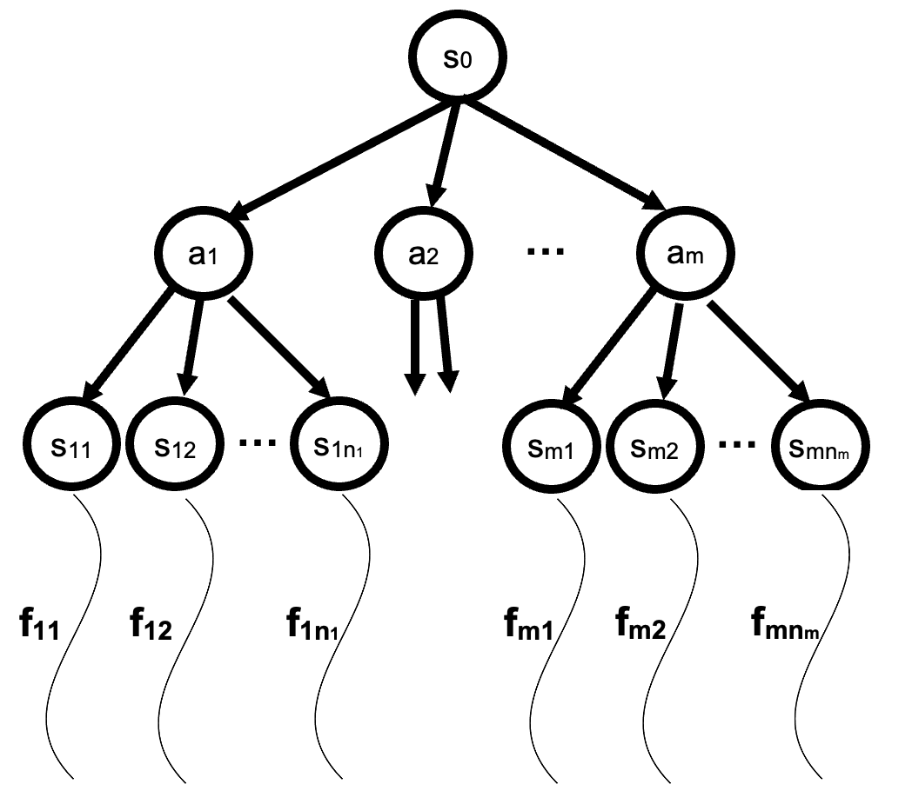
Deterministic
problem for
each future
\[ Q(b, a, u) = \sum_{g} b(g)\, Q_g(x, a, u) \]
It assumes the goal will be fully revealed after the next step (“in hindsight”). So the robot never takes an action just to gather information.
Continuous actions: instead of solving \(\arg\min_a Q(b, a, u)\), take a first-order step along the gradient of \(Q(b, a, u)\) with respect to \(a\).
Why this fits shared autonomy:
Two options for the per-goal action-value \(Q_g(x, a, u)\):
Robot and user both act: predict future user inputs with \(\pi^{\text{usr}}_g\) and run Q-learning on \(C^{\text{rob}}\). This is the standard QMDP approach, but it is expensive and depends on the user model.
Robot takes over (used in the paper): assume the user stops giving inputs and the robot completes the task optimally, \(C^{\text{rob}}(s, a, u) \to C^{\text{rob}}(s, a, 0)\) in the future.
A goal (e.g., “grasp the canteen”) can be achieved through many targets \(\kappa \in K\) (grasp poses). Both assistance and prediction decompose over targets:
\[ V_g(x) = \min_\kappa V_\kappa(x), \qquad Q_g(x, a) = C_{\kappa^*}(x, a) + V_{\kappa^*}(x'), \quad \kappa^* = \arg\min_\kappa V_\kappa(x') \]
\[ V^{\approx}_g(x) = \underset{\kappa}{\text{softmin}}\, V^{\approx}_\kappa(x), \qquad Q^{\approx}_g(x, u) = \underset{\kappa}{\text{softmin}}\, Q^{\approx}_\kappa(x, u) \]
Confidence \(= \max_g p(g) - \min_g p(g)\), with two goals:
The hand is directly between two goals, so no action helps both. Assistance grows roughly linearly with confidence, which looks like predict-then-blend arbitration.
Moving forward helps both goals. The policy makes progress even with zero confidence, which predict-then-blend cannot do.
Nobody designs the arbitration; it falls out of minimizing expected cost-to-go.
See Fig. 2 in the paper.
Clip from Javdani’s RSS 2015 talk (3:00–4:45)
10 users, within-subjects, grasping 3 objects with a joystick-teleoperated arm
policy (this paper) vs. blend (predict-then-blend, Dragan & Srinivasa)
policy was significantly faster (\(F(1,9) = 12.98\), \(p = 0.006\))
and needed significantly less user input (\(F(1,9) = 7.76\), \(p = 0.021\))
The gap grows on trials where blend is slow
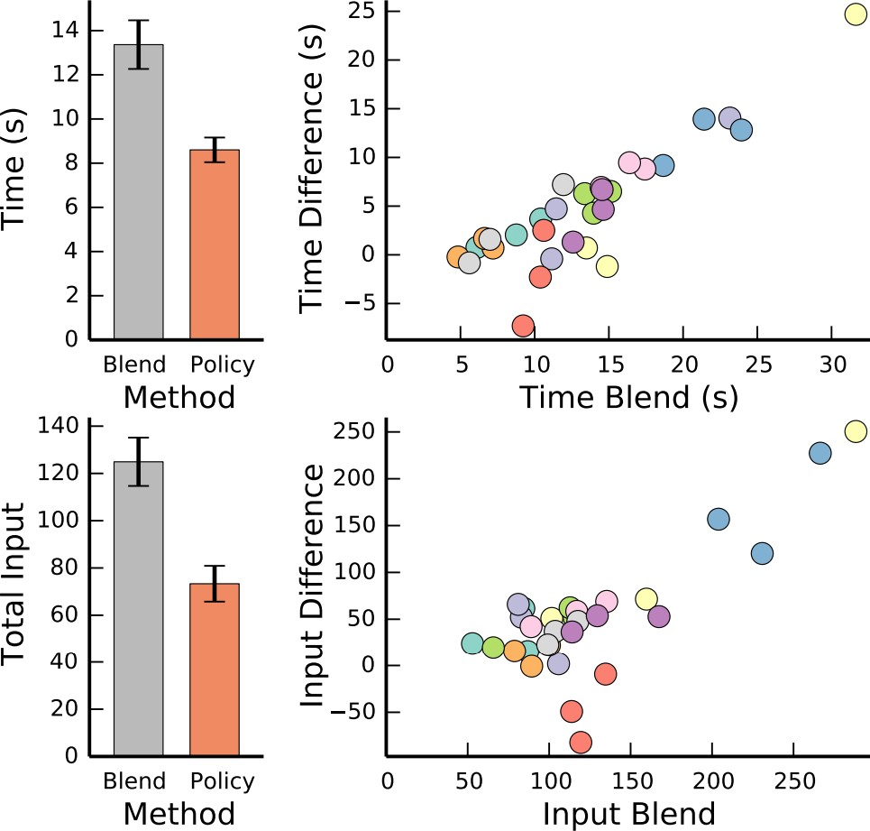
Users felt less in control with policy, even though they knew they were faster
The “which do you prefer” score trended toward blend (mean 2.9 on a scale where 1 = blend, 7 = policy), although not significantly
“I was able to do things a little faster. However, I still don’t like feeling it has a mind of its own.”
Key tension: task efficiency vs. control authority
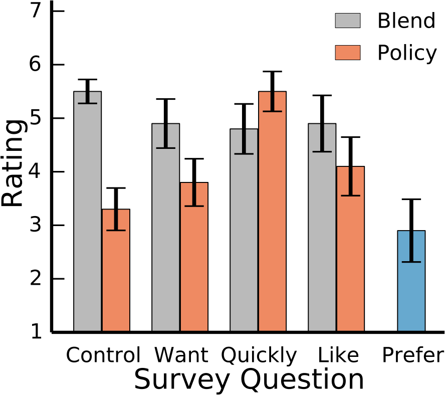
Needs a known, discrete set of goals (and their targets)
Needs a dynamics model and hand-designed costs \(C^{\text{usr}}\), \(C^{\text{rob}}\); the study used a very simple distance-based cost
QMDP never gathers information on purpose, which is fine only when user inputs are informative
Users lose some control authority and, in this study, tended to prefer the less efficient method
Small study: 10 participants, all with robotics experience
The next two papers each remove some of these assumptions.
Javdani, S., Srinivasa, S. S., & Bagnell, J. A. (2015). Shared autonomy via hindsight optimization. Robotics: Science and Systems.
RSS2015 talk: “Shared autonomy via hindsight optimization”
Javdani, S., Admoni, H., Pellegrinelli, S., Srinivasa, S. S., & Bagnell, J. A. (2018). Shared autonomy via hindsight optimization for teleoperation and teaming. The International Journal of Robotics Research, 37(7), 717-742.
Dragan, A. D., & Srinivasa, S. S. (2013). A policy-blending formalism for shared control. The International Journal of Robotics Research, 32(7), 790-805.
ICAPS 2015 talk: “Hindsight Optimization for Probabilistic Planning with Factored Actions”
Siddharth Reddy, Anca D. Dragan, Sergey Levine
Robotics: Science and Systems (RSS), 2018
Paper · Blog post · Project website and code
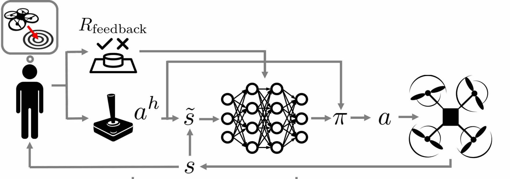
Human pilot playing Lunar Lander alone. Video from https://sites.google.com/view/deep-assist
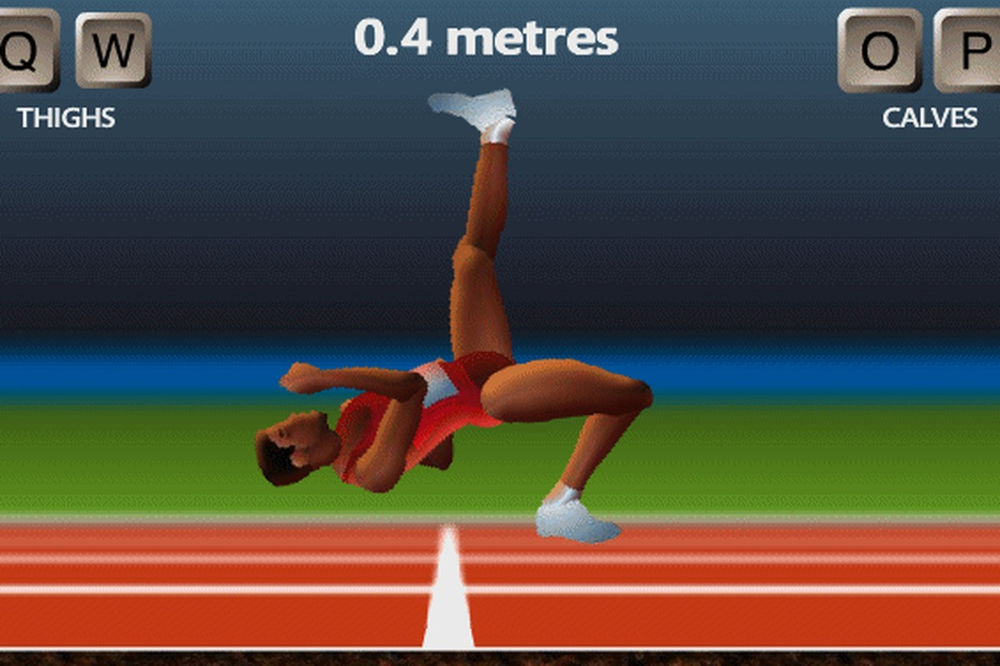
https://www.foddy.net/Athletics.html or Google “qwop”
Prior work (e.g., Javdani et al.) assumes:
Reddy et al.: use model-free deep RL to learn an end-to-end mapping from (observation, user input) to action values, with task reward as the only supervision.
User input plays two roles:
a prior policy that the agent fine-tunes;
a sensor from which the agent decodes the user’s private information (e.g., the goal).
Challenge #1: follow the user closely enough that they keep getting feedback from their own actions, but deviate when their actions are bad. Consistently ignoring the user degrades the quality of their inputs.
Challenge #2: learn with few interactions, because a human is in the loop.
\[ R(s, a, s') = \underbrace{R_{\text{general}}(s, a, s')}_{\text{known}} + \underbrace{R_{\text{feedback}}(s, a, s')}_{\text{unknown, but observed}} \]
\(\qquad \qquad \quad \uparrow\)
Agent’s reward
(what we want to maximize)
\(\qquad \qquad \qquad \uparrow\)
Handcrafted “common sense”
knowledge: do not crash, do
not tip, etc.
\(\uparrow\)
Depends on the user’s private
intent, e.g., success or crash
signaled at the end of an episode
Known user policy: known \(\mathcal{G}\) and \(\pi_h\) \(\Rightarrow\) infer the goal \(\hat g_t\) with Bayesian inference (MaxEnt IRL), as in Javdani et al.
Known goal space: known \(\mathcal{G}\), unknown \(\pi_h\) \(\Rightarrow\) predict \(\hat g_t\) with an LSTM trained on the user’s data.
Minimal assumptions: nothing is known \(\Rightarrow\) feed the user’s raw action \(a^h_t\) to the agent (main focus).
In settings 1-2, \(R_{\text{feedback}}\) is parameterized by the goal (reward when \(s' = g\)). In setting 3, it is only observed, typically as a sparse terminal success/failure signal from the user.
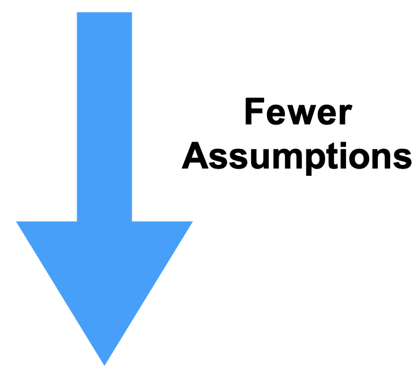
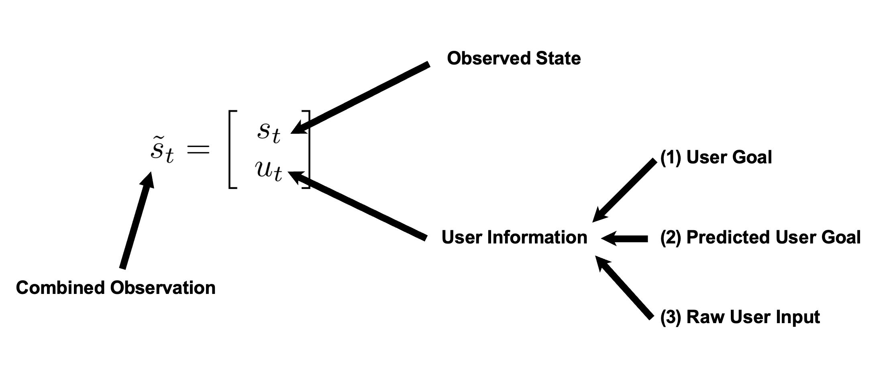
Concatenate the observation with the user information: \(\tilde s_t = [s_t;\, u_t]\), with \(u_t = \hat g_t\) (settings 1-2) or \(u_t = a^h_t\) (setting 3)
In setting 3 the agent must decode the user’s intent implicitly from their actions
Off-policy: the executed actions do not have to be the agent’s greedy actions, so control can be explicitly traded off between user and agent
Off-policy Q-learning tends to be more sample-efficient than policy gradients and Monte Carlo methods
Implementation: neural fitted Q-iteration with experience replay, a target network, and double Q-learning
\[ \pi_\alpha(a \mid \tilde s, a^h) = \delta\Big(a = \operatorname*{arg\,max}_{\{a \,:\, Q'(\tilde s, a) \ge (1-\alpha)\, Q'(\tilde s, a^*)\}} f(a, a^h)\Big) \]
\[ Q'(\tilde s, a) = Q(\tilde s, a) - \min_{a'} Q(\tilde s, a') \]
Feasible set: actions not much worse than the optimal action \(a^*\); among these, execute the one most similar to the user’s action, where \(f\) counts agreeing action dimensions
Subtracting \(\min_{a'} Q\) keeps the comparison meaningful for negative Q-values, and makes the condition invariant to affine scaling of \(Q\)
\(\alpha \in [0, 1]\) is the tolerance for suboptimal user actions, i.e., how much the copilot defers to the pilot:
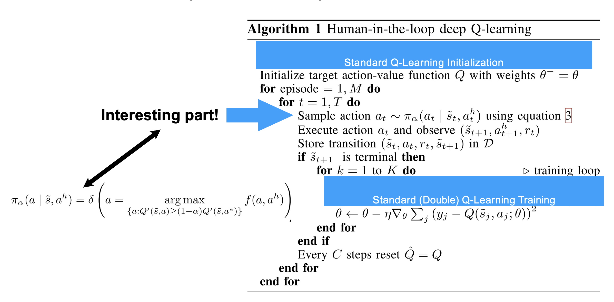
Like Q-learning, but execute the closest high-value action to the user’s input instead of the highest-value action.
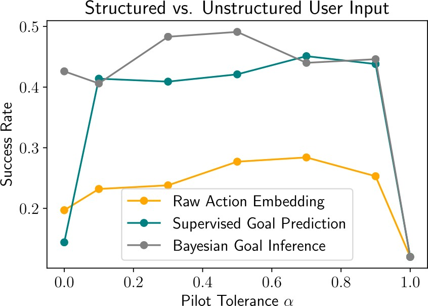
Simulated LaggyPilot on Lunar Lander. At \(\alpha = 1\) the copilot never overrides the pilot, and performance collapses.
When the goal space and user model are known, structured inputs (goal inference or prediction) beat raw actions.
The best \(\alpha\) depends on the pilot: \(\alpha = 0\) for SensorPilot, \(\alpha \approx 0.5\) for LaggyPilot and NoisyPilot.
Simulated pilots on Lunar Lander (OpenAI Gym): pilots that are laggy, noisy, or only signal the landing-site direction. The copilot does not observe the landing site.
Human pilots on Lunar Lander (\(n = 12\)): assistance significantly increased success and reduced crashes.
Physical experiments with a real quadrotor (\(n = 4\)).
Practical caveat: pretraining. The copilot is first trained without a pilot, in simulation (an idealized point-mass model for the drone), and then fine-tuned with the human. Learning from scratch with a human in the loop would need too much data.
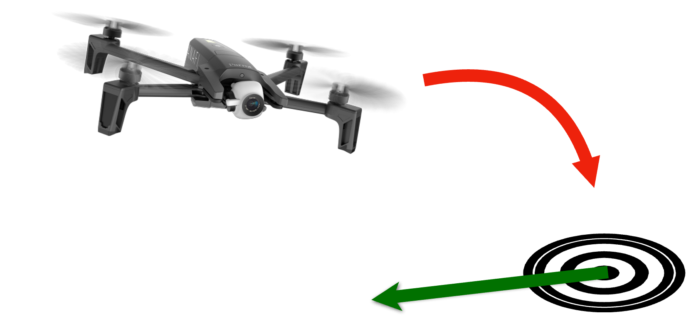
Goal: land the drone on a pad with the camera facing a target object.
Pilot: human, knows the target object.
Copilot: our agent, knows where the pad is, but not the target object.
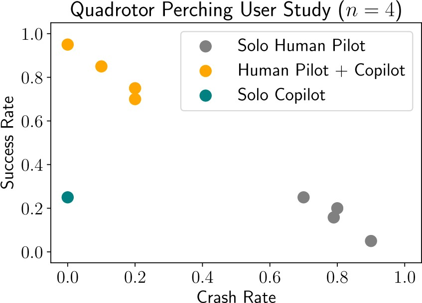
Important caveat: only n = 4 humans in the drone study. The evidence is mostly anecdotal.
Human pilot with the RL copilot. Video from https://sites.google.com/view/deep-assist
Strengths
Assists with no assumptions about dynamics, the user’s policy, or the goal representation
Can still exploit a goal space or user model when available
A single knob, \(\alpha\), sets the level of assistance
Clear writing; code released
Weaknesses
Needs a reward signal and a lot of data, so in practice it relies on simulator pretraining
Reactive (memoryless) policy: it cannot integrate evidence about intent over time
Discrete, low-dimensional action spaces
Small user studies; users found the copilot somewhat inconsistent and too aggressive at stabilizing
Reddy, S., Dragan, A. D., & Levine, S. (2018). Shared autonomy via deep reinforcement learning. Robotics: Science and Systems.
BAIR blog post: Shared Autonomy via Deep Reinforcement Learning
Project website and code: https://sites.google.com/view/deep-assist
Schwarting, W., Alonso-Mora, J., Pauli, L., Karaman, S., & Rus, D. (2017). Parallel autonomy in automated vehicles: Safe motion generation with minimal intervention. ICRA.
Dylan P. Losey, Krishnan Srinivasan, Ajay Mandlekar, Animesh Garg, Dorsa Sadigh
IEEE International Conference on Robotics and Automation (ICRA), 2020
Wheelchair-mounted assistive arms can help with eating, pouring, cooking, … but they are controlled with low-DoF joysticks
The arm has many more DoF (here, 7). Users must switch between modes, such as translation and rotation, which is slow and tiring.
Shared autonomy (Javdani et al.) helps reach one of a discrete, known set of goals, but the mapping from joystick to robot action is still hand-designed
Reddy et al. learn assistance, but the user’s input has the same dimension as the robot’s action
Insight: high-DoF robot actions can often be embedded into intuitive, low-DoF latent actions that the user controls directly.
Task MDP \((\mathcal{S}, \mathcal{A}, \mathcal{T}, R, \gamma, \rho_0)\) with \(a \in \mathbb{R}^m\), plus a dataset of demonstrations \(\mathcal{D} = \{(s_0, a_0), (s_1, a_1), \ldots\}\)
Learn a latent action space \(\mathcal{Z} \subset \mathbb{R}^d\) with \(d < m\), and a decoder
\[ \phi : \mathcal{Z} \times \mathcal{S} \to \mathcal{A} \]
Algorithm:
Controllability: for any two states \(s_i, s_j\) in the data, there is a sequence of latent actions that takes the robot from \(s_i\) to \(s_j\) via \(s_k = \mathcal{T}(s_{k-1}, \phi(z_{k-1}, s_{k-1}))\)
Consistency: the same \(z\) has a similar effect in nearby states, measured with a task-dependent metric \(d_M\):
\[ d_M\big(\mathcal{T}(s_1, \phi(z, s_1)),\, \mathcal{T}(s_2, \phi(z, s_2))\big) < \epsilon \quad \text{whenever } \|s_1 - s_2\| < \delta \]
Encoder \(\psi(s, a) \to z\) and decoder back to \(\hat a\), trained with the reconstruction loss \(\|a - \hat a\|^2\)
VAE regularizer \(KL(\mathcal{N}(\mu, \sigma) \,\|\, \mathcal{N}(0, 1))\): a small joystick tilt should not suddenly pour the whole glass, which helps consistency and scaling
State conditioning: the meaning of a joystick input depends on what the robot is doing. Pushing down means “pour” when holding a glass, but means nothing when the gripper is empty. So the decoder is \(\phi(z, s)\) rather than \(\phi(z)\).
Compared models: PCA (prior teleoperation baseline), AE, VAE, and the state-conditioned cAE and cVAE
Planar 5-DoF arms with tasks: Sine (1-D latent), Rotate (two arms holding a box), Circle (2-D latent), Reach
Reconstruction (Sine): cAE and cVAE reach 1.4% and 3.7% of PCA’s loss; AE and VAE are no better than PCA (98-100%)
Controllability (Sine): cAE and cVAE end up 5.6% and 11.1% as far from the goal as PCA; AE and VAE are worse than PCA
Consistency/scaling: all models map \(z\) to motion roughly linearly (\(R^2 \approx 0.94\) or more)
Disentanglement (Circle): the angle between the motions caused by \(z_1\) and \(z_2\) is about 72-74° for cAE/cVAE vs. 27-34° for AE/VAE (ideal: 90°)
Only state-conditioned models reconstruct actions accurately and give controllable latent spaces.
Feeding task from the HARMONIC dataset: guide a fork to one of 3 morsels with a 2-DoF joystick on a 7-DoF arm
Baselines: no / low / high / full shared-autonomy assistance from the dataset (24 people); 10 new participants used the cVAE
cVAE: 44 of 50 trials successful, with significantly lower completion time, joystick input, and trajectory length than High Assist
Caveat: a comparison across studies, since the new participants only used the cVAE
Make a simplified “apple pie”: pick up and pour eggs and flour, recycle or return containers, add an apple, stir
Shared autonomy with discrete goals does not apply here: the goals are continuous, and the user also controls the style of motion (e.g., pouring vs. upright)
11 participants, within-subjects: cVAE (one 2-DoF joystick) vs. End-Effector teleoperation (two joysticks plus a translation/rotation mode toggle)
The cVAE was trained on under 7 minutes of kinesthetic demonstrations
With the cVAE, participants finished faster and used the joystick less. They rated it easier, less effortful, and more natural.
…but they did not clearly prefer it: they enjoyed the extra freedom of end-effector control
Outside the demonstration distribution, the latent actions become erratic. One participant rotated the arm upside-down and could not recover.
Needs task-relevant demonstrations and a manual alignment of latent axes with the joystick
Performance does not equal preference: as with Javdani et al., users value freedom of control
The authors propose switching between latent actions and standard teleoperation when latent actions stop helping
Losey, D. P., Srinivasan, K., Mandlekar, A., Garg, A., & Sadigh, D. (2020). Controlling assistive robots with learned latent actions. ICRA.
Newman, B. A., Aronson, R. M., Srinivasa, S. S., Kitani, K., & Admoni, H. (2018). HARMONIC: A multimodal dataset of assistive human-robot collaboration. arXiv.
Herlant, L. V., Holladay, R. M., & Srinivasa, S. S. (2016). Assistive teleoperation of robot arms via automatic time-optimal mode switching. HRI.
Kingma, D. P., & Welling, M. (2014). Auto-encoding variational Bayes. ICLR.
Daniel Rakita, Bilge Mutlu, Michael Gleicher
Robotics: Science and Systems (RSS), 2018
Every method so far outputs an end-effector command at each time step. Something has to turn it into joint motion, in real time.
In teleoperation there is no lookahead: the next pose goal comes from the human, e.g., mimicry-based teleoperation that maps the user’s hand pose to the robot’s end effector (Rakita et al., HRI 2017)
Example: a robot spoon-feeding a person must track a moving head, keep the spoon level, and move smoothly without self-collisions, all at once
Goal: match end-effector pose goals as well as possible without sacrificing motion feasibility
A common robotic skeleton is a tree (or chain) of rigid links connected by joints
The joint angles \(\Theta\) (the robot configuration) determine the end-effector pose through forward kinematics, \(FK(\Theta)\)
End effector: the tool at the end of a robot arm (gripper, spoon, …)
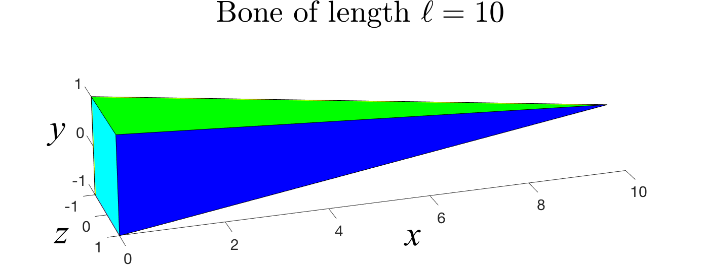
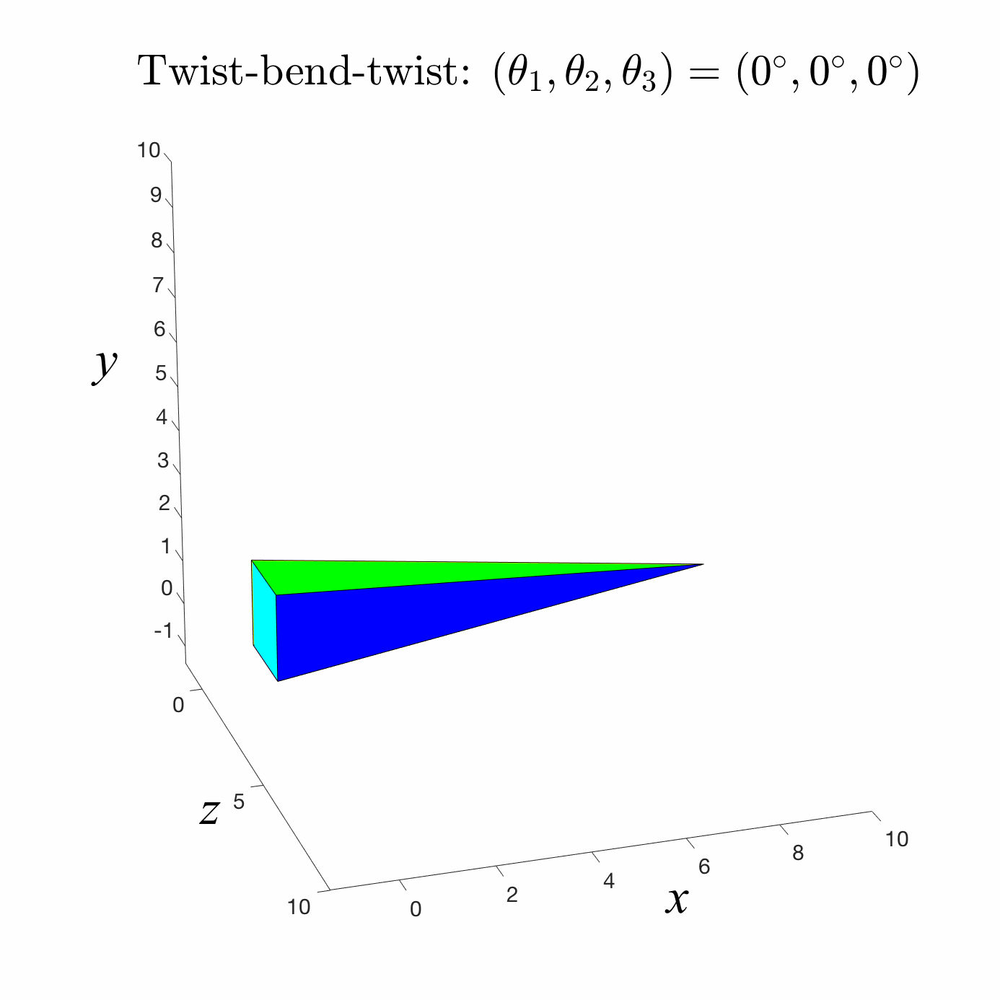
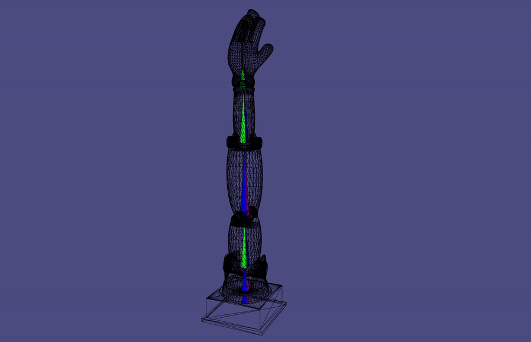
materials from https://github.com/alecjacobson/computer-graphics-csc418
Inverse kinematics: find joint angles that achieve a desired end-effector pose, \(\Theta = IK(p)\)
Closed-form solutions exist only for special kinematic structures. A pose may have many solutions or none.
In practice, IK is solved as an optimization problem:
\[ \min_\Theta \; \chi_p(\Theta) = \| p_g - FK(\Theta) \|_2 \]
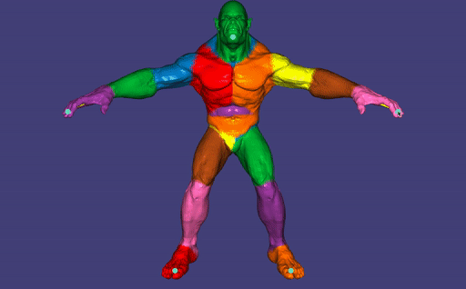
Input: a new end-effector goal \((p_g, q_g)\) at every update, e.g., from a human teleoperator
Output: a joint configuration \(\Theta\) at every update
Requirements:
Direct point-to-point: solve IK at every update with a state-of-the-art solver (Trac-IK), seeded with the previous solution
Real-time motion planning: predict the future pose, solve IK, plan a feasible path (RRT-Connect / PRM), and execute
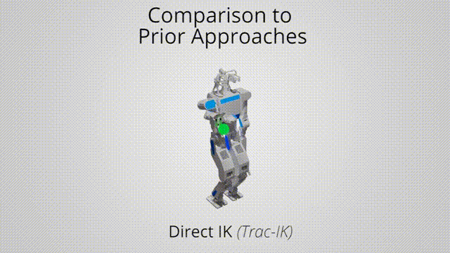
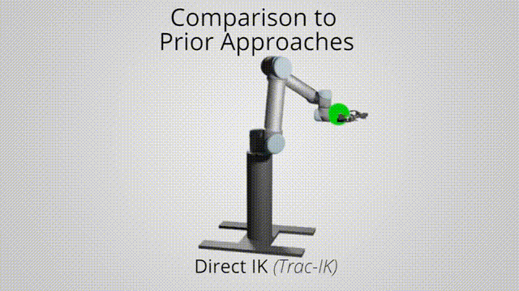
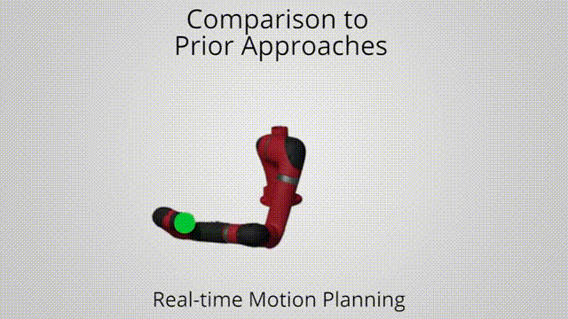
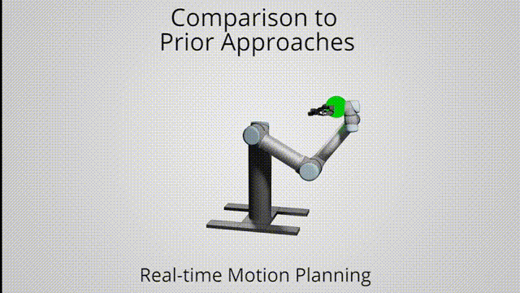
\[ \Theta = \arg\min_\Theta f(\Theta) \quad \text{s.t.} \quad c_i(\Theta) \ge 0, \; c_e(\Theta) = 0, \; l_i \le \Theta_i \le u_i \]
\[ f(\Theta) = \sum_{i=1}^{k} w_i \, h_i(\Theta, v(t)) \, f_i(\Theta, \Omega_i) \]
Static weights \(w_i\) and optional dynamic weights \(h_i\); each \(f_i\) encodes one sub-goal
7 objective terms: end-effector position; end-effector orientation; minimal joint velocity, acceleration, and jerk; minimal end-effector velocity; self-collision avoidance
2 constraints: joint-velocity limits per update, and singularity avoidance
Pose matching is not a hard constraint: it can be relaxed when it conflicts with more important terms. This works even without redundant joints.
Terms live in different units and scales, such as joint velocities vs. Euclidean distances. With plain quadratic losses, the weights do not mean anything.
Each term’s value \(\chi_i(\Theta)\) is passed through a parametric normalization function:
\[ f_i(\Theta, \Omega_i) = (-1)^n \exp\!\left(\frac{-(\chi_i(\Theta) - s)^2}{2c^2}\right) + r\,(\chi_i(\Theta) - s)^4 \]
A narrow Gaussian “groove” around the goal value, plus a gentler polynomial that keeps a consistent gradient pointing toward it
All terms share a common range, so weights become interpretable: weight 2 means roughly twice as important as weight 1
Example: for position matching, \(\chi_p(\Theta) = \|p_g - FK(\Theta)\|_2\) with \(n = 1, s = 0, c = 0.2, r = 5\)
\[ \text{col}(\Theta) = \sum_{i,j} b \cdot \exp\left( -\frac{\text{dis}(l_i, l_j)^2}{2c^2} \right) \]
About 1 ms per evaluation: too slow when the objective is called 100+ times per solve
An MLP trained on 1M random configurations approximates \(\text{col}(\Theta)\) in about \(10^{-5}\) s
The network only speeds up a hand-defined cost; it does not learn what a collision is
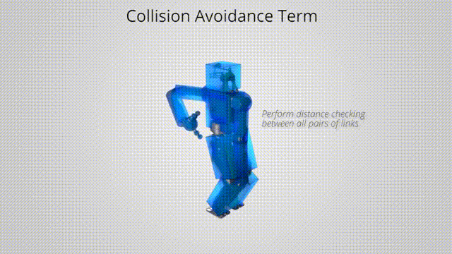
Kinematic singularity: the Jacobian in \(\dot{\mathbf{x}} = \mathbf{J}(\Theta)\, \dot{\Theta}\) loses full column rank. Near it, small end-effector motions require huge joint velocities.
Proxy distance to a singularity: the condition value from the SVD of \(\mathbf{J}\), \(\; c = \sigma_N / \sigma_1\) (small means nearly singular)
Why not Yoshikawa manipulability? This ratio favors a round manipulability ellipse rather than a large one, which generalizes better across robots.
Preprocessing: sample 500k configurations and estimate the mean \(\mu_c\) and standard deviation \(\text{std}_c\)
Constraint: \(c \ge \mu_c - b \cdot \text{std}_c\) with \(b = 2\), which avoids roughly the worst 2.5% of configurations
7 robots (5 to 8 DoF), 5 tasks (circle and square tracing, isolated rotations, spoon feeding, two-arm cooking), 100 random starts each, about 1.5M solutions in total
Two weight settings: (A) emphasizes accuracy and (B) emphasizes smoothness
Setting (A) had the best end-effector accuracy; setting (B) had the smoothest joint motion
Both had zero discontinuities, singularities, and self-collisions. Trac-IK had many of each.
Real-time motion planning was feasible but tracked pose goals poorly
About 17 ms per solution, vs. about 2 ms for Trac-IK
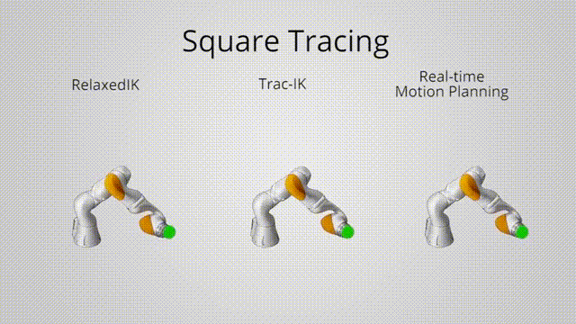
Strengths
Accurate and feasible motion in real time
Works without redundant joints, even on under-articulated arms
Interpretable weights thanks to normalization
Not tied to a particular solver; open source
Limitations
Local non-linear optimization: no convergence guarantees
Weights and loss parameters are still hand-tuned
Self-collision only: no environment obstacles, no dynamics
Slower than plain IK; per-robot preprocessing takes 20-30 minutes
Rakita, D., Mutlu, B., & Gleicher, M. (2018). RelaxedIK: Real-time synthesis of accurate and feasible robot arm motion. Robotics: Science and Systems.
Rakita, D., Mutlu, B., & Gleicher, M. (2017). A motion retargeting method for effective mimicry-based teleoperation of robot arms. HRI.
Beeson, P., & Ames, B. (2015). TRAC-IK: An open-source library for improved solving of generic inverse kinematics. Humanoids.
Ryan Hoque, Lawrence Yunliang Chen, Satvik Sharma, Karthik Dharmarajan, Brijen Thananjeyan, Pieter Abbeel, Ken Goldberg
Conference on Robot Learning (CoRL), 2022 (Oral)
Amazon, Nimble, Plus One, Waymo, and Zoox already run robot fleets that call remote human teleoperators when a robot is at risk or stuck
Each intervention is also training data, which the whole fleet can share for continual learning
Interactive Fleet Learning (IFL): \(N\) robots, \(M \ll N\) humans. The robots ask for help (robot-gated), and an allocation policy \(\omega\) decides who gets it.
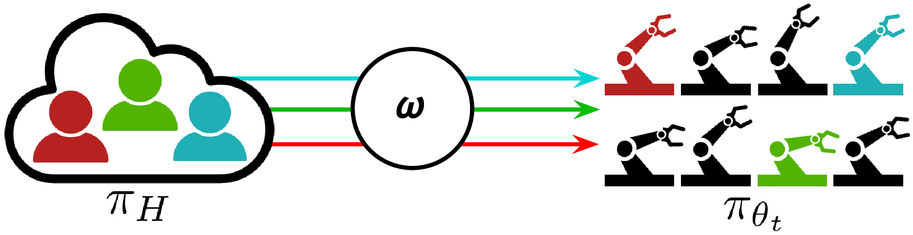
\[ \omega : (\mathbf{s}^t, \pi_{\theta_t}, \boldsymbol{\alpha}^{t-1}, \mathbf{x}^t) \mapsto \boldsymbol{\alpha}^t \in \{0, 1\}^{N \times M}, \quad \textstyle\sum_j \alpha^t_{ij} \leq 1, \ \sum_i \alpha^t_{ij} \leq 1 \]
\[ \max_{\omega} \ \mathbb{E}_{\tau \sim p_{\omega, \theta_0}} \left[ \frac{M}{N} \cdot \frac{\sum_{t=0}^{T} \bar{r}(\mathbf{s}^t, \mathbf{a}^t)}{1 + \sum_{t=0}^{T} \|\boldsymbol{\alpha}^t\|_F^2} \right] \]
\[ D^{t+1} \leftarrow D^t \cup \{(s_i^t, \pi_H(s_i^t)) : \text{robot } i \text{ is teleoperated at } t\}, \qquad \pi_{\theta_{t+1}} \leftarrow f(\pi_{\theta_t}, D^{t+1}) \]
Fleet-DAgger is a family of algorithms. Each one is defined by a priority function \(\hat{p}(s, \pi_{\theta_t}) \geq 0\) plus a minimum teleoperation time \(t_T\), which prevents thrashing.
At each step: sort the robots by \(\hat{p}\). Humans finish ongoing resets and teleoperation. Free humans go to the highest-priority unassisted robots, and robots with \(\hat{p} = 0\) get no help.
Priority functions compared (all but Random also prioritize constraint-violating robots):
| Algorithm | Priority |
|---|---|
| C | Only hard resets; the policy never improves |
| Random | Random priority with a threshold |
| U.C. (Fleet-EnsembleDAgger) | Uncertainty: ensemble variance |
| U.G.C. (Fleet-ThriftyDAgger) | Uncertainty + Goal critic (probability of task failure) |
| C.U.R. (new) | Constraint, then Uncertainty, then Risk (safety critic: probability of constraint violation) |
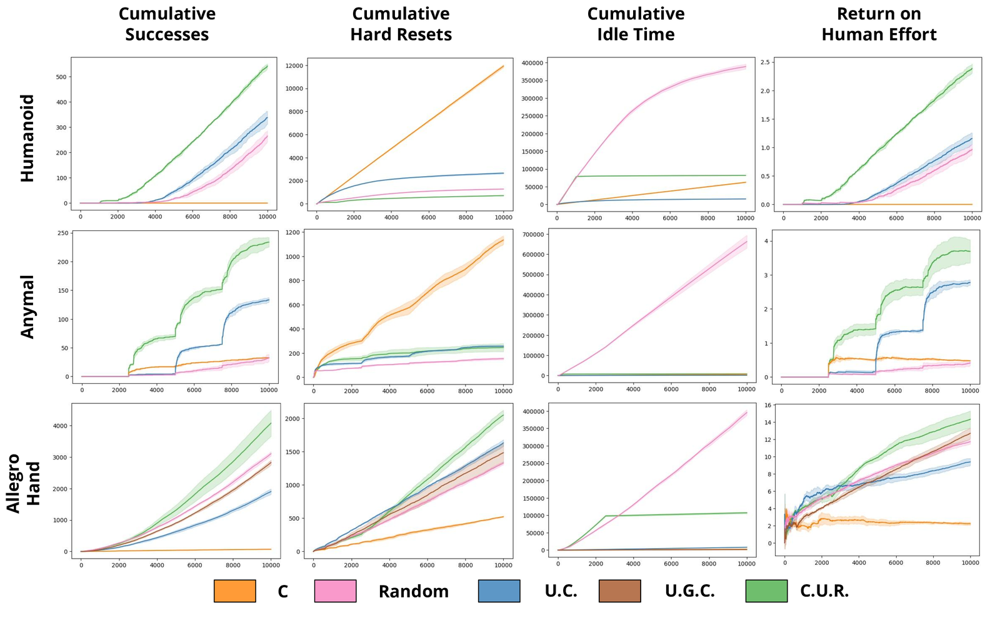
Isaac Gym, \(N = 100\) robots, \(M = 10\) algorithmic (PPO) supervisors, \(T = 10{,}000\) steps
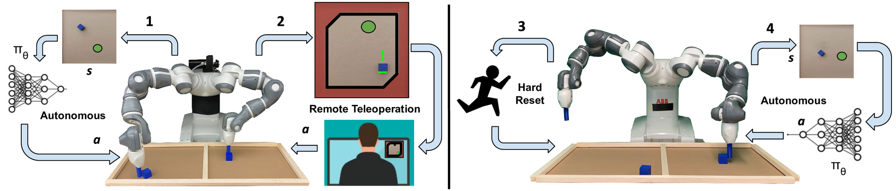
Physical: 4 ABB YuMi arms pushing blocks, 2 remote humans
Allocation matters: the choice of \(\hat{p}\) changes every metric in every environment
C.U.R. has the most successes and highest ROHE everywhere. ROHE grows over time: the fleet learns when to stop asking for help.
On real robots, C.U.R. wins by a small margin. Real humans are multimodal, so high uncertainty does not mean help is needed.
Limitations: interchangeable humans, independent robots, instant switching between robots. In simulation, the “humans” are RL policies.
Unlike shared autonomy, control is all-or-nothing: fully teleoperated or fully autonomous
Hoque, R., Chen, L. Y., Sharma, S., Dharmarajan, K., Thananjeyan, B., Abbeel, P., & Goldberg, K. (2022). Fleet-DAgger: Interactive robot fleet learning with scalable human supervision. CoRL.
Hoque, R., Balakrishna, A., Novoseller, E., Wilcox, A., Brown, D. S., & Goldberg, K. (2021). ThriftyDAgger: Budget-aware novelty and risk gating for interactive imitation learning. CoRL.
Menda, K., Driggs-Campbell, K., & Kochenderfer, M. J. (2019). EnsembleDAgger: A Bayesian approach to safe imitation learning. IROS.
Swamy, G., Reddy, S., Levine, S., & Dragan, A. D. (2020). Scaled autonomy: Enabling human operators to control robot fleets. ICRA.
Javdani et al. 2015 (hindsight optimization): model-based. Known dynamics, a known discrete goal set, a MaxEnt user model, and hand-designed costs. Assists for the whole distribution over goals.
Reddy et al. 2018 (deep RL): model-free. No dynamics, goal set, or user model. Needs a reward signal and simulator pretraining. The user’s input is an observation and a prior policy.
Losey et al. 2020 (latent actions): no goal set and no goal inference. Instead it learns the control interface from demonstrations, so the user stays in charge of both the goal and the style of motion.
Rakita et al. 2018 (RelaxedIK): a low-level enabler that turns human-specified end-effector goals into feasible joint motion in real time.
Hoque et al. 2022 (Fleet-DAgger): the robot decides when it needs help, and the human takes full control or resets it. Assumes interchangeable humans and independent robots. Turns that help into imitation data for the whole fleet.
Javdani et al.: users were faster with the policy, but felt less in control and leaned toward predict-then-blend
Reddy et al.: users found the copilot helpful but somewhat inconsistent and overly aggressive
Losey et al.: users found latent actions easier, but enjoyed the freedom of end-effector control
The amount of control authority the user keeps is a design variable in its own right, not just a side effect of the assistance algorithm.
How should a system trade off task efficiency against the user’s sense of control? Should the user choose (e.g., \(\alpha\) in Reddy et al.)?
Which assumptions are acceptable in assistive settings: a known goal set, a user model, a simulator, task demonstrations?
How do we evaluate these systems convincingly with small user studies (\(n = 4\) to \(12\)), and users who adapt to the robot over time?